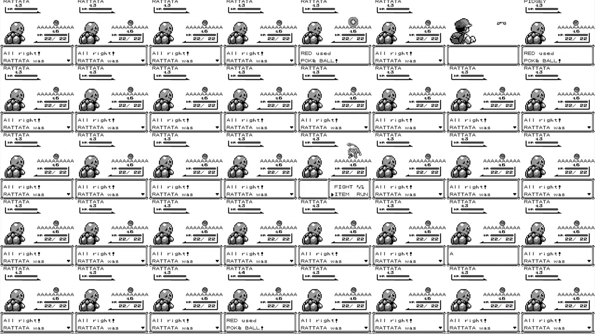
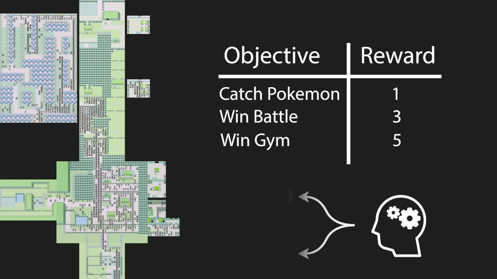
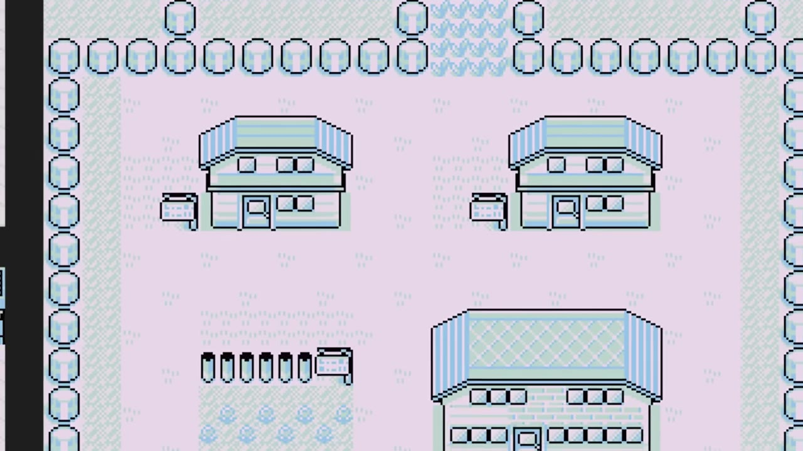
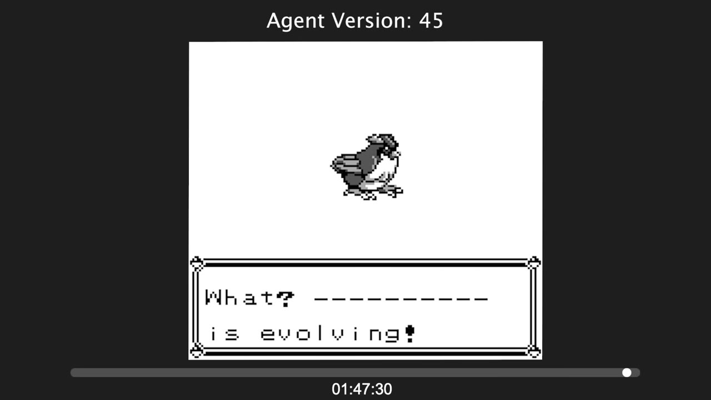
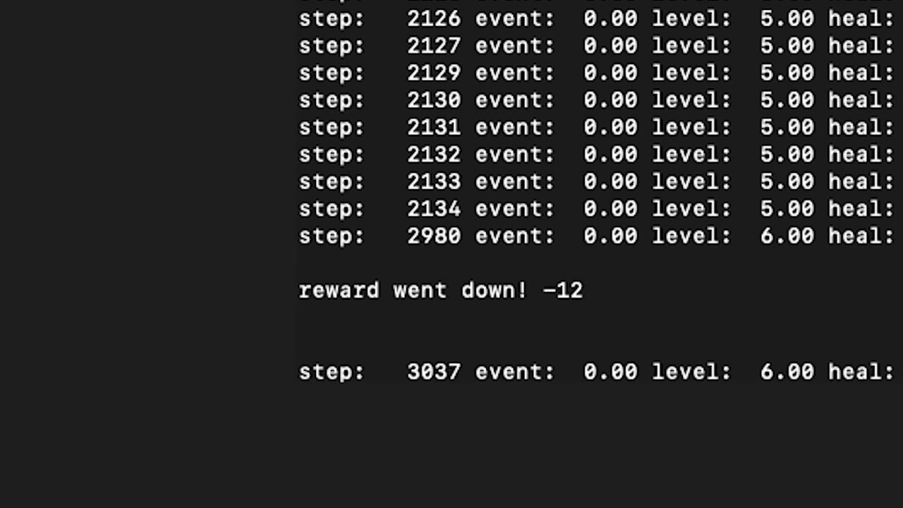
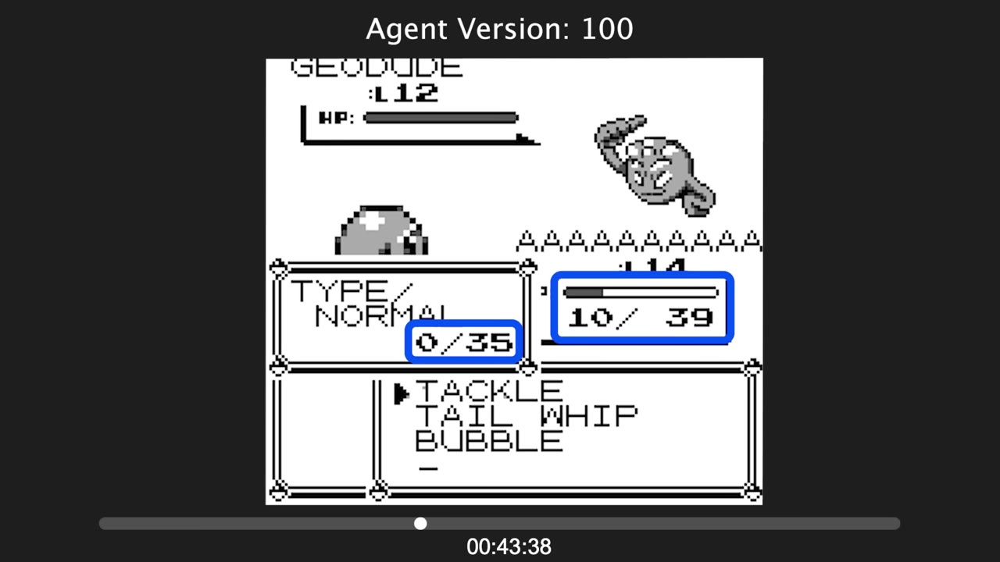
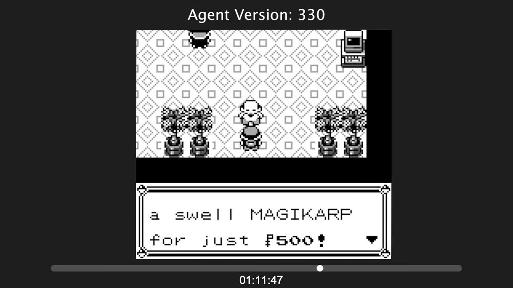
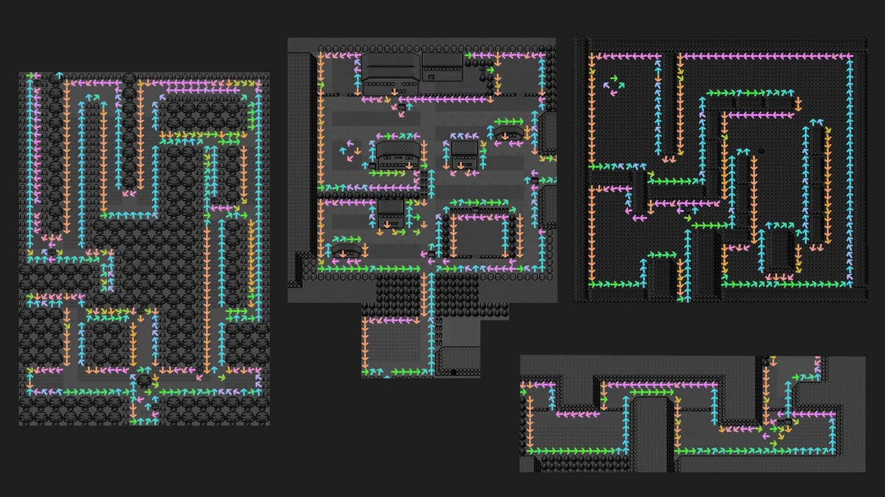
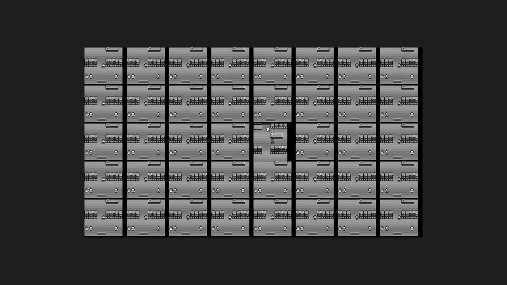
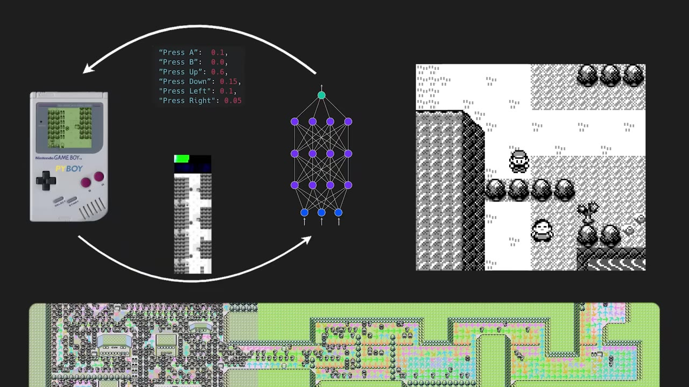

Training AI to Play Pokémon with Reinforcement Learning
An AI starts knowing nothing but how to press random buttons. After five years of simulated play, it catches Pokémon, evolves them, beats a gym leader — and along the way its failures start to look uncomfortably like our own.
Creator: Peter WhiddenRuntime: 33 minVideo published: October 9, 20239.7M views when summarized
An agent learns Pokémon Red with PPO, guided only by hand-built rewards — exploration and total Pokémon levels do most of the work.
Each reward bug produces relatable failure: it gets hypnotized by animated scenery, develops a phobia of the Pokémon Center, and compulsively buys 10,000 Magikarp.
It beats Brock only by accident — a depleted move forces it to try Bubble, which it then learns to keep using.
It exploits the game's determinism the way speedrunners do: same opening inputs, same guaranteed first-encounter catch.
A full training run costs about $50 on the cheapest cloud; the whole project ran to roughly $1,000.
01 · The setup
An AI that learns Pokémon from nothing
What you're watching is 20,000 games played in parallel by a single agent exploring Pokémon Red. It begins with no knowledge at all and can only press random buttons. Over five years of simulated game time it picks up real capabilities — catching, evolving, winning a gym battle — purely by learning from experience.

Thousands of games run side by side. Each tile is a separate playthrough feeding experience back into one shared policy.00:00:45
The hookThe successes are impressive, but the failures are the interesting part — they're surprisingly relatable to our own human experiences.
02 · How it works
Rewards instead of instructions
The AI sees the screen and chooses buttons, much like a human. It optimizes those choices with reinforcement learning, so we never tell it which buttons to press — we only give high-level feedback on how well it's playing. Assign rewards to the objectives you want, and the agent works out the rest through trial and error.

Objectives map to reward values; the agent fills in the buttons. The first and most basic objective is simply exploring the map.00:01:54
If we assign rewards to the objectives we want it to complete, the AI can learn on its own through trial and error.— Peter Whidden
03 · Curiosity
Novelty becomes a trap
The first reward is for curiosity: keep a record of every screen seen, and pay out whenever the current screen has no close match. It should push the agent toward new places. Instead it gets fixated on one corner of Pallet Town — the spot with animated water, grass, and walking NPCs. The animation alone trips the novelty reward over and over, so admiring the scenery pays better than going anywhere.

The animated tiles in Pallet Town keep firing the novelty reward, so the agent loiters instead of exploring.00:03:34
The human parallelCuriosity leads us to our most important discoveries, but it also makes us vulnerable to distraction. The fix here is easy because it's an AI: raise the pixel-difference threshold to a few hundred so animations no longer count as novel — then restart training from scratch to keep the whole process reproducible.
04 · Levels
Adding a reason to fight
With exploration fixed, the agent reaches Viridian City but starts running from battles — combat screens look too similar to earn exploration reward. So a second reward is added for the combined levels of its Pokémon. Now it has a reason to fight, catch, and grind. Eventually its Pokémon hit high enough levels to evolve. It cancels evolutions at first, then decides they're worth keeping.

By version 45 the agent evolves a Pidgeotto for the first time — and learns to switch moves when one runs out of PP, which matters a lot later.00:06:27
05 · Trauma
One bad event reshapes behavior
The agent keeps charging into unwinnable battles and never heals, so losing sends it back to the start. While studying that, something stranger shows up: once per training run, a single game loses ten times more reward than anything intended. Replaying it, the agent walks into a Pokémon Center, fiddles with the PC in the corner, and deposits a level-13 Pokémon — instantly dropping 13 levels of reward, because reward is the sum of Pokémon levels.

"Reward went down! -12." Depositing a Pokémon subtracts its level all at once — a signal far larger than anything the design intended.00:08:59
Losing its Pokémon only one time is enough to form a negative association with the whole Pokémon Center, and the AI will avoid it entirely in all future games.— Peter Whidden
Root causeThe reward never accounted for total levels decreasing. The fix: only pay out when levels increase. After that, the agent starts visiting the Pokémon Center normally.
06 · Brock
Beating your own experience
At the Pewter gym, the agent's own history works against it. It has won everything so far using primary moves and now relies on them exclusively — but Brock needs something else. Lose too many times and it learns to avoid the fight entirely. The breakthrough is luck: a game starts with one barely-alive Pokémon whose Tackle is fully depleted, forcing it to switch to Bubble, which happens to be super effective against Rock types.

Tackle sits at 0/39 PP, so the agent is pushed to pick Bubble instead — and after 300 simulated days and 100 learning iterations, it finally beats Brock.00:11:46
The human parallelExperience and biases help us decide faster, but they also limit our thinking and hamper our ability to approach a problem from a new angle.
07 · Magikarp
A goal that drifts from its purpose
At Mount Moon a man sells a Magikarp for ₽500. Magikarp is useless, but buying it is a cheap way to gain five levels — so the agent buys it every single time, more than 10,000 Magikarp across all games. The level reward was meant to push progress; here it just rewards spending money.

"A swell MAGIKARP for just ₽500!" Five instant levels is irresistible to a level-maximizing agent, useful Pokémon or not.00:13:36
The human parallelEvolution configured us to chase scarce nutrients; in an age of abundance that same drive makes us buy unhealthy food. A proxy objective that worked in one environment becomes misaligned when the environment changes.
08 · Navigation
A counterclockwise habit
Aggregating every move on every tile reveals a pattern: the agent prefers to walk counterclockwise along the edges of the map. Edge on the right, walk up; edge above, walk left; and so on. One explanation is that hugging the perimeter of a 2D space guarantees you pass every entry and exit — a cheap way to navigate with no memory and no planning.

Arrow colors encode average movement direction per tile. The consistent counterclockwise drift helps the agent recover after it gets off track.00:16:50
Where it breaksAt the bottom of Route 22, a one-way ledge makes the area easy to enter but hard to leave. It works like a fly trap — the agent's random movement lets it in and then it spends a disproportionate amount of time stuck there.
09 · Determinism
Learning the speedrun trick
Partway through training, every game starts with the exact same opening button sequence — and it's not even an efficient path. Watching longer explains it: the agent throws a Poké Ball on its first encounter and catches on the first try, every time. The game is full of randomness but stays deterministic with respect to player input, so identical inputs from an identical start state guarantee the same result.

Run the games side by side and the synchronized openings are obvious — the agent found the same exploit speedrunners use.00:18:57
10 · Under the hood
PPO, PyBoy, and seven rewards
The algorithm is proximal policy optimization (PPO) — a standard modern RL method, also the final step in tuning large language models. The environment is Pokémon Red on the PyBoy emulator, which runs ~20x normal speed per CPU core; parallelized across a big server, that's over 1,000x real time, so a 40-game iteration finishes in about six minutes.

Game Boy screen → the three most recent frames stacked for short-term memory → a small non-recurrent convolutional policy network → button presses.00:24:44
Policy
A small, non-recurrent CNN — no memory of the past, chosen for training stability and speed.
Memory substitute
Stack the three most recent screens, plus HP / total-level / exploration status bars rendered visually so they're human- and machine-readable.
Rewards
Seven in total, with exploration and total levels doing nearly all the work; the rest must broadly encourage good play and be hard to cheat.
Game state
Read straight from emulator memory using the pret project's reverse-engineered memory map — the whole game fits in under 1 MB.
Where it could go nextWhidden points at transfer learning (a CLIP experiment already classifies game states zero-shot), learned environment models like MuZero and DreamerV3, and hierarchical RL that splits low-level control from high-level planning.